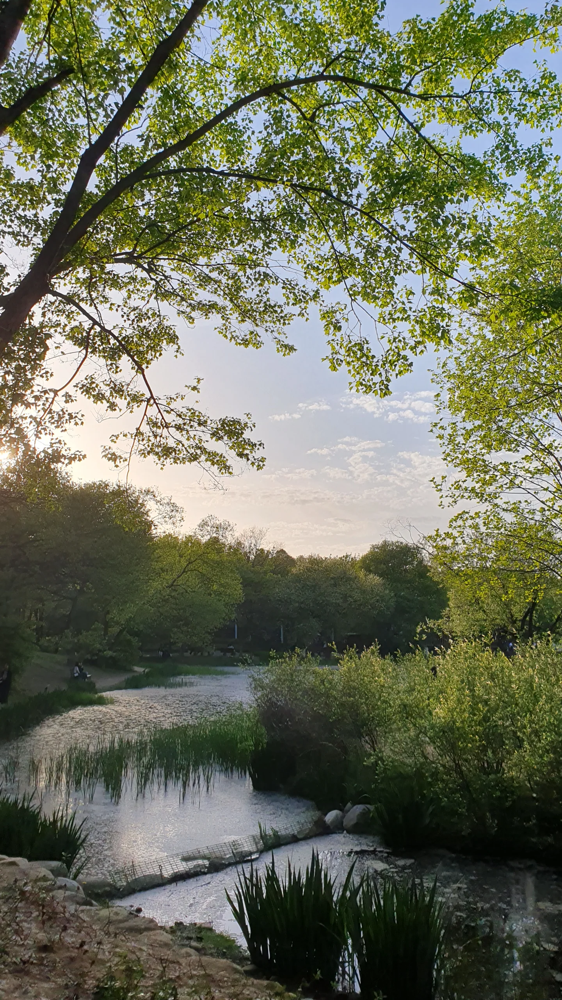
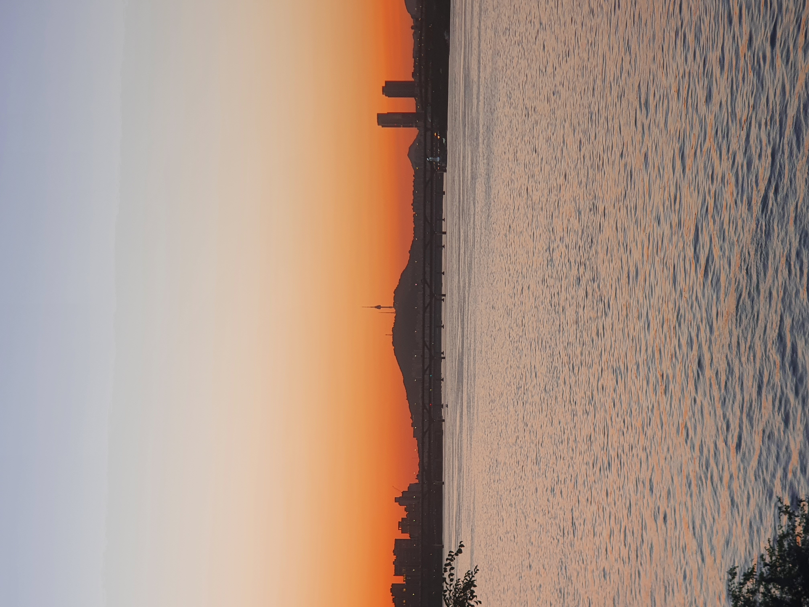
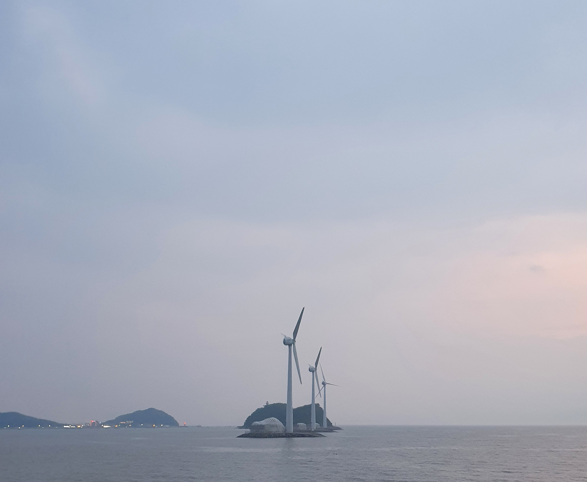
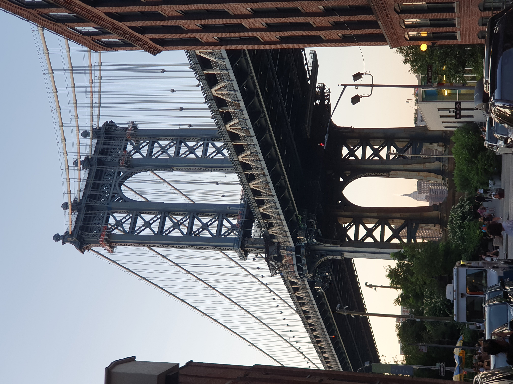

기억에 남는 여행지




안녕하세요, 저는 새로운 경험을 좋아하고 재밌게 사는 게 인생 목표인 로건입니다! 몸을 움직이는 걸 즐기며, 헬스를 가장 오래 했고, 최근 클라이밍을 시작했는데 너무 재밌어서 기회가 된다면 꾸준히 해보려고 해요. 함께 성장하는 것에 관심이 많아요. 어떻게 하면 더 좋은 영향을 나눌 수 있을지 고민도 자주 합니다. 책도 좋아하는데 『상실의 시대』를 가장 인상 깊게 읽었어요. 그리고 영화는 정말 많이 봅니다! 억지 신파는 별로지만, 장르는 크게 안 가려요. 재밌는 거 좋아하는 사람, 함께 성장하고 싶은 사람, 대화 나누는 걸 즐기는 사람이라면 언제든 환영입니다! 친해져요 😃

클린트 이스트우드 연출 및 주연, 힐러리 스왱크, 모건 프리먼 주연의 2004년 영화예요. 단순히 인간 승리하는 스포츠물이 아니라 휴먼드라마라 감동이 더 컸던 것 같아요. 가족이 아닌 사람들이, 각자의 가족보다 훨씬 단단하고 끈끈한 가족의 모습을 보여줘요. 이 영화를 정말 많이 봤는데 볼 때마다 울었습니다. 꼭 한번쯤 보길 추천합니다..!
무라카미 하루키의 『상실의 시대』를 처음 다 읽었을 때 이유모를 상실감을 느껴서 기억에 남습니다. 이 책은 상실의 아픔을 겪은 인간의 아픔을 극복하지 못하는 삶과 극복한 삶을 대비되게 보여줘서, 삶을 어떻게 살지, 행복이란 무엇인가 등을 고민하게 하는 책인 것 같습니다. 사람은 누구나 크든 작든 상실을 겪기에 지침이 될 수 있는 이 책을 한번쯤 읽어보는 것도 좋을 것 같아요.